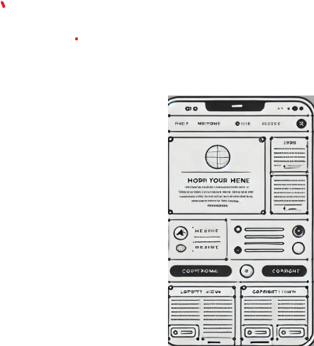

Site Name
ITR Explore - This name represents a platform that inspires and guides travelers through exciting adventures around the globe.
Site Purpose
The purpose of ITR Explore is to provide travelers with curated adventure guides, travel tips, and destination reviews to inspire and assist in planning thrilling journeys.
Scenarios
- What are the top adventure destinations for this season?
- How can I safely plan a solo backpacking trip?
Color Schema
- #1a73e8 (Blue) - Used for headings and navigation links.
- #fbbc05 (Yellow) - Used for buttons and call-to-action sections.
Typography
- Roboto - Used for body text for readability.
- Lora - Used for headings to convey a classic, adventurous feel.
Wireframe
Below are the wireframes for mobile and desktop layouts:
